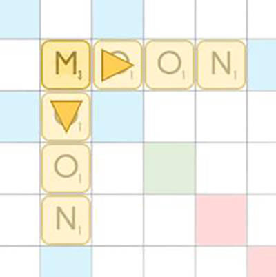

UNIQUE ALGORITHM
When thinking on how to approach the design and implementation of the game, I knew I wanted to make this game as user-friendly as possible. I didn't want to have players make their moves by clicking and dragging each tile one-by-one like one would on a mobile game, or real life. That would be far too cumbersome on a computer, and frustrating when you find out the move wasn't legal after all.
I decided to have users type out the word they want to have played, and I came up with a complicated but very efficient algorithm that finds every position possible for that word on the board. This algorithm is used for every keypress and searches as you type. It considers intersections, parallel positions and add-ons (when a player simply adds letters to the end of a previously played word), and recognizes when and how to use blank tiles, if a player possess them.
TWO GAMEMODES
Classic
This mode is for players looking for a challenge, and a more traditional gameplay. It uses the same algorithm as casual mode but it hides the results from the players, and to make a move, a player must know the position he wants to place the word at. This way, the algorithm doesn't need to check for the legality of the move, as it has already done so, and a player does not need to retype the word for every wrong placement.
Casual
This mode is meant for quicker and easier games for players looking for a fun time. As you type and as the algorithm calculates the possible locations for each move, it highlights the positions of the first letter of the move using a plus-icon, and a player can hover over it to see the word's final position. If there are two directions possible, a player can choose one by clicking on the arrow.

MODERN INTERFACE
Along with the algorithm to help with gameplay, the graphical user interface was designed for simplicity and beauty- it's minimalist design using simple shapes and icons paired with color coding allows for a distractionless gameplay. A simple notification bar is used to announce any moves, the scores and names are large and clear and the board itself has muted and pleasant tones that allow the bold tan tile pieces to stand out. Other implementations often have bright colors that limit the player from seeing all the letter tiles clearly.
As players type the word they wish to play, the letters used from their "rack" also become faded, symbolizing their use. To allow for privacy of the letters in the rack and any special tiles played on the board, there is a splash screen between turns that directs the current player to pass the laptop or controls to the next player. This splash screen is also used as a form of alert for when special tiles are triggered or a player wins the game.
{kind=link}
{kind=link}